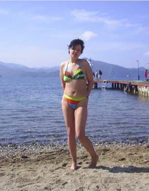
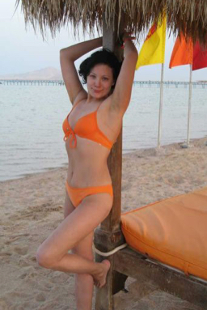

История похудения -60 кг
История современной золушки или как сбросить 60 килограмм
Предыстория
Судьба бывает разной. Одним Бог дает тонкую талию и длинные ноги, другим большие килограммы. Но дает Бог и возможность все изменить. Одну такую историю я хочу рассказать – про себя.
Сколько себя помню, я была пышечка.
В садике, в школе. Пампушкой поступила и на филфак Самарского университета. Мне даже нравилась быть такой полненькой, крепенькой, сбитой, в которой есть за что ухватиться. Нравилась это и мужчинам - в 19 лет выскочила я замуж за своего одноклассника и в тот же год родила. Беременность обошлась мне очень дорого. Мое тело полезло как квашня. Стрелка весов постоянно обновляла рекорд, как сейчас курс рубля к доллару. В итоге при рождении сына я весила ровно центнер – 100 кг! Или плюс 25 кг к стартовому весу.
Беременность обошлась мне очень дорого. Я набрала 25 кг и стала весить центнер.
А дальше кормление грудью, другие бесконечные хлопоты за ребенком, за которыми я не заметила, как за год набрала еще 20 кг. Итого 120 кг. Удручающая цифра.
За хлопотами молодой мамы я и не заметила, как за год набрала еще 20 кг – удручающая цифра.
В университет после академотпуска вернулась не пышечка, а самая настоящая корова. И я даже не заметила, как еда стала для меня самоцелью, а завтраки, обеды, ужины и многочисленные перекусы нечто большим, чем просто удовлетворение инстинкта голода. Это стали самые приятные и желанные ритуалы.
Я и не заметила, как еда стала для самоцелью, моим самым желанным времяпровождением.

Даже муж отошел на второй план. Я спохватилась, но было поздно – мой Коля, потерпев какое-то время, отправился искать себе другую женщину.
Муж не вытерпел и отправился искать себе другую женщину.
Конечно же, я попыталась бороться. Перепробовала несколько диет.
Последней была очень популярная свекольная диета. В интернете было написано, что у нее практически оптимальный баланс между белками, жирами и углеводами, благодаря большому количеству витамин, клетчатки и микроэлементов в этом овоще. Поэтому можно худеть без вреда для своего здоровья. При соблюдении всех правил, говорилось, что теряешь 5-7 кг в неделю! Я с энтузиазмом перешла на эту диету. Вот, примерно, какой был мой дневной рацион:
-
Завтрак: 150 гр.
натертой на терке свеклы. 1 стакан минеральной воды.
-
Обед:
2 средних отварных моркови. 100 гр. отварной свеклы, натертой на терке. 1 стакан воды.
-
Ужин:
1 стакан кефира. 200 гр. вареной или запеченной рыбы.
Конечно, сытной эту диету назвать нельзя. И полтора месяца, когда я на ней сидела,
мне постоянно хотелось есть. Но я терпела изо всех сил. Ведь я очень хотела похудеть! Но все оказалось напрасны.
Мой вес практически не изменился. На собственном горьком опыте я убедилась, что эта диета помогает не всем, особенно если обмен веществ сильно разрегулирован (а таких, увы, очень много).
Я запаниковала и вообще практически перестала есть. Килограммы начали таять. Но и таяла моя воля. Все мысли у меня были о еде. Голод превратил меня в животное! Если раньше я была свинья по виду. То теперь стала и в душе. Я элементарно хотела жрать, жрать и еще раз жрать!! Путем неимоверных усилий я смогла сбросить свой вес до 105 кг.
Путем неимоверных усилий я смогла сбросить свой вес до 105 кг
Сбросить, чтобы за два месяца вернуться к своим ненавистным 120 кг. Круг замкнулся и это для меня был круг ада. Пытка голодом, наверное, одна из страшнейших.
С этими килограммами я и окончила университет и вступила во взрослую и безрадостную для меня жизнь.
Со 120 килограммами я окончила университет и вступила во взрослую и безрадостную для меня жизнь
А вот теперь история золушки
Моей спасительницей стала моя кума. Она работает в самарском филиале Сбербанка и может себе позволить отдыхать за границей. После поездки в Израиль она привезла мне небольшой пакетик, на котором было написано
«Black Latte».
«На, попробуй. Это кофе для похудания. Говорят, хорошо помогает», – вот так просто, обыденно отправила она меня к своему счастью. За этот пакетик с кофе я схватилась, как утопающий за соломинку.
Инструкция по пользованию была предельно простая –
за 20 минут до еды просто выпить кофе.
Все! Я начала действовать. Вот мой тогдашний дневной рацион:
Завтрак
- Две столовые ложки детокс кофе «Black Latte» с молоком
- Яичница, кусочек хлеба с маслом, чай
Обед
- Две столовые ложки детокс кофе «Black Latte» с кипятком
- Борщ (или суп), каша (рисовая, гречневая, пшенная и т.д.), салатик с капусты, кусочек хлеба с маслом, чай.
Ужин
- Две столовые ложки детокс кофе «Black Latte» с кефиром
- Кефир с булочкой и с маслом
Но это было только начало!
Мой организм, до этого, наверное, с опаской отпускал привычные килограммы, но когда понял, что расставаться с ними легко и просто, пустился во все тяжкие. Следующий месяц с теми же борщами, кашами и кусочком хлеба с маслом и непременным
детокс кофе Black Latte
и новый рекорд –85 кг!
Следующий месяц с тем же рационом и непременным детокс кофе Black Latte – новый рекорд – 85 кг!
Золушка стала поглядывать на бальное платье
Дальше я решила чуть сбавить прыть.
Инстинкт мне подсказывал, что большие килограммы можно и надо - сбрасывать быстро. А средние – средне. Поэтому количество приемов Black Latte
я сократила до двух раз перед каждым приемом пищи.
Но все равно вес таял.
Постепенно, в очень первом приближении, появились контуры элегантной женщины – еще неделя и новый рекорд - 80 кг!
Я чувствовала, что я худею. Это было видно и по ставшей немного свободней одежде, по появившемуся какому-то приливу сил.
Я решила, что взвешусь через месяц. Не выдержала. Взвесилась через 2 недели. Взвесилась и ахнула - 105 кг! Те 105 кг, которые я завоевала с муками, слезами, с постоянным желанием есть, есть и есть!
Еще неделя и новый рекорд - 80 кг!
У меня появился бешеный интерес к жизни. Хотелось гулять с сыном, ходить в кино, на выставки, зависать с подругами в кафе, словом, сочно жить. И я стала так жить!
У меня появился бешеный интерес к жизни
Мои родители, видя, что дочка решительно взялась за себя, решили хоть как-то помочь и организовали мне шикарный отдых.
В мае –
Египет (78 кг при обильном «Все включено» + 2 раза до еды Black Latte).
Август –
в Турции (73 кг все с тем же «Все включено» и все теми же 3 раза до еды Black Latte).
Египет – 78 кг при обильном «Все включено» + 3 раза до еды Black Latte

Турция – 73 кг все с тем же «Все включено» и Black Latte
Отдохнувшая загоревшая, ПОХУДЕВШАЯ я вернулась, строя самые радужные планы на будущее. Но, в своих мечтаниях я забыла про прозу жизни - оба пакетика с кофе Black Latte, которые мне привозила кума - закончились.
Это была катастрофа! Я уже не представляла себе, как я снова буду толстой!? Я не хо-о-очу этого! Но ситуация, к счастью, быстро разрешилась в положительную сторону. В интернете я нашла
официальный сайт
этого медицинского препарата (он сертифицирован в США, Европе, Израиле, России и т.д.) и тут же заказала себе спрей. Через три дня долгожданный пакетик с кофе был у меня в руках!
Дальше все пошло по хорошо знакомой схеме – два-три раза выпить кофе до еды. И с хорошо прогнозируемым результатом.
Золушка надела бальное платье и встретила принца
В своем желании сбросить лишний вес я совсем махнула рукой на свою личную жизнь. Но зато она не махнула на меня. На меня обратил внимание красивый состоявшийся мужчина, владелец строительной фирмы. И закрутилось! Но, килограммы все равно таяли!
Греция – 68 кг уже без «Все включено», но с мужчиной и все теми же 3 раза до еды пью Black Latte

И вот часы двенадцать бьют…
Сейчас у меня все замечательно.
У меня есть обаятельный, импозантный, состоятельный мужчина.
Я обустраиваю наше загородное гнездышко и работаю (благодаря ему) пресс-секретарем Самарского государственного университета.
Мой сын Максимка уже ходит в садик. Мой вес – 62,5 кг!
Обустраиваю свое загородное гнездышко.
Пресс-секретарь Самарского государственного университета
Мой вес равен 62.5 кг. Я сбросила 58,5 кг.
Сказка может стать явью. Надо только захотеть и знать, как это сделать. Надеюсь, я вам это подсказала.
Пресс-секретарь СамГУ Виолетта Рябова (Самохина)
Пессимистка
Я тоже перепробовала кучу диет – кремлевская, яичная. Сидела, как и Виолетта, на свекольной. И с таким же результатом – НУЛЕВЫМ. Очень надеюсь, что мне тоже поможет Блэк Лате, как и Виолетте. Похоже у нас одинаковый обмен веществ. То есть у меня такой же, какой был у Виолетты, до использования этого кофе.
Milley
Виолетта, вообще агонь!!!мотивирует только в путь!!!=)))) Тоже пью этот КОФЕ, брала его тут
Александра
Класс! Такие истории окрыляют! Для меня эта тема актуальна. Завтра же заказываю этот кофе!
Наталья
Я тоже пила этот кофе. И уже есть на что посмотьреть =))))
Юлия
Молодцы девчонки! Я тоже буду стараться стать похожей на вас Очень буду!
Толик
Виолетте респект и уважуха. Сделала себя сама.
Светлана
Кофе пью полтора месяца. Минус 25 кг.
Marya222
Кофе действительно класс.
Сашка
Классная девушка. Я б женился на такой. Я представляю как кусает сейчас локти ее бывший ))
Любовь
Убедительная история. Лишнее доказательство того, что жизнь интереснее сказки. ЗАКАЗЫВАЮ блэка лате.
Машуля
простое русское слово "риспект"!
Дарья
Вот какая я умница стала с помощью этого кофе
Alina80
Худею уже 1,5 месяца и минус -28кг, очень интересно было прочитать подробную историю Виолетты, у меня тоже не было особой мотивации к похудению, просто в один прекрасный день смотря на себя в зеркало я увидела заплывшую жиром ТЕТКУ, а мне всего 21, при том что мой муж весил 60кг, можно представить как мы смотрелись вместе!!! Скажу честно в детокс кофе поверила сразу и муж поддерживал, первый результат не заставил себя ждать -5кг за первую неделю, очень рада что не мучала себя другими диетами, голодовками, гречкой с кефиром и листом салата, БлэкЛате моя первая и последняя диета-стиль жизни!! Девушки-толстушки не отчаивайтесь есть палочка-выручалочка, которая поможет вам начать жить заново! Начните прямо сейчас!!! Спасибо Виолетте
Людмила
Я также всю жизнь искала варианты диет, подходящих для моего желудка и силы воли (которая в зачаточном состоянии), Виолеттин Кофе - это идеальный способ похудеть любому человеку в кратчайшие сроки и абсолютно не напрягаясь! В общем, я думала, что чудес не бывает - но они есть, проверено на себе лично.
Alla
Я тоже хочу сказать спасибо Виолетте. Мотивирует сильно ))) Детокс кофе отличный способ привести себя в порядок и поддерживать форму. Начинаю сегодня же. Уже заказала его на официальном сайте
Анютка-цветочек
Виолетта — Мега результат! Спасибо!
Байкерша
Благодаря этой статье я изменила свою жизнь в лучшую сторону похудев на 15кг и это не придел, так как назвать это чудесное средство диетой язык не поворачивается)))многие критикуют такой вид похудения, но разве полезнее молодой девушке или парню быть толстыми и при этом у многих это является причиной отсутсвия деток, с трудом подниматься по ступенькам или просто добежать куда-нибудь без труда? Начните и у вас все получится как у многих уже давно получилосЬ! КОФЕ рулит!
Василиса Ивановна
Это реально работает…инфа 100500%
Ekaterinka
Виолетта молодец!! Удивительная история!)))
ДевчуШШ шшшка
Это самый замечательный способ похудеть, который только можно представить. Виолетта, спасибо! Худею уже месяц и сбросила 17 кило. Заказывала кофе на этом сайте